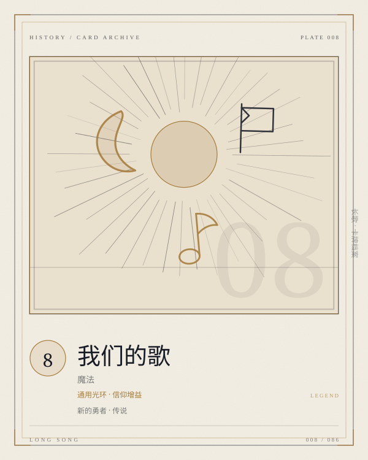

PLATE 008 / 086OUR-SONG
卡面为程序生成的概念图版；卡文与规则以本页正文为准。
CARD / GENERAL / 魔法
我们的歌
通用光环 · 信仰增益
新的勇者传说魔法COST 8光环英雄
使己方信仰获得：「每有一个己方英雄，使所有己方单位获得+50+50。」
- COST
- 8
- C / A / D
- —
- GROUP
- 通用魔法
- LIMIT
- 1构筑上限
归属 通用 · 通用 · 新的勇者 · 传说。上限字段为「1」；原典未列上限的卡，页面不替它补。
关联 LINKS · 出边 + 入边 · 同目标去重
关联不是规则联动。它记录这张卡在设计与叙事上依赖谁、被谁依赖；跨阵营的边只标「对照」。
强化
新的勇者
每多一位英雄，全体单位就多一层 +50/+50
强化
格兰蒂亚守卫军
光环把 1/100/400 抬成 1/150/450
被配套
伊莲女神的祝福
先把信仰和单位养大，再用祝福把它们补满
被配套
贤者的向往
一个按英雄数量加全体，一个按攻击力百分比加其他单位
条件
英雄水晶
英雄越多，光环越厚；水晶负责把英雄送到场上
对照
大奇迹·超度·英灵颂
一个用信仰养单位，一个用信仰打终结
词条 KEYWORDS IN TEXT
卡文没有命中已归档的规则词条。
ARCHIVIST'S NOTE
肥鱼碎碎念
八费，给信仰一个光环：每有一个己方英雄，所有己方单位 +50/+50。它是全卡池唯一以信仰为增益目标、也是唯一以英雄数量计量的牌。
按裁定，光环是实时动态的：英雄被消灭，加成就掉；英雄返场，加成就回来。它不锁定、不预计算，这让它和「返场」「多英雄」两个机制天然咬合。
八费很重，但它不直接赢。它把信仰从「被保护的物件」变成了「持续生长的 buff 源」——只要信仰还在，你的单位就比对手大一圈。问题是，八费回合你还有多少单位站在场上？
—— 归档者，读这张卡的时候